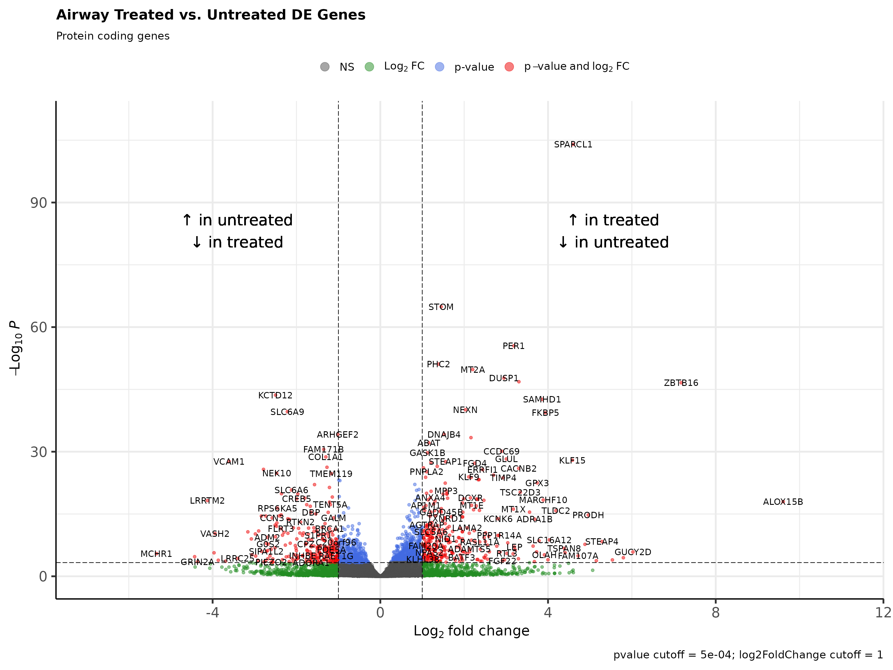
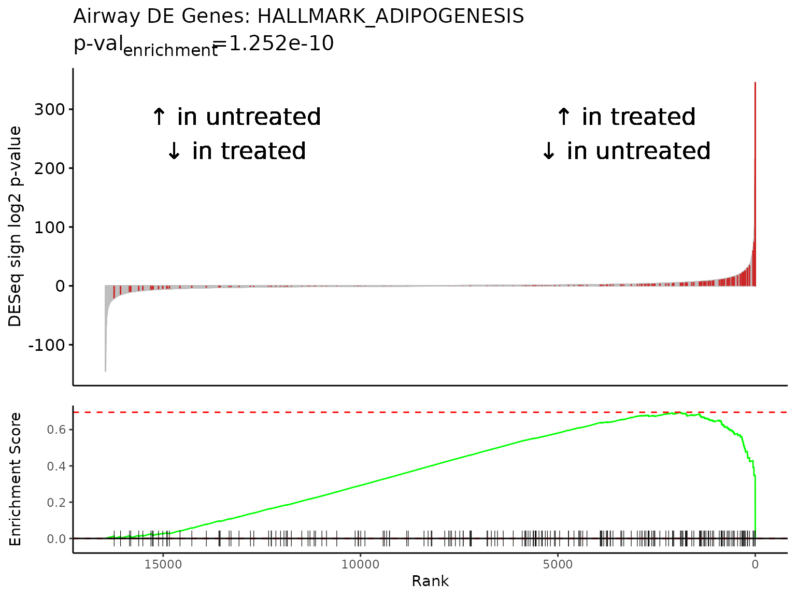
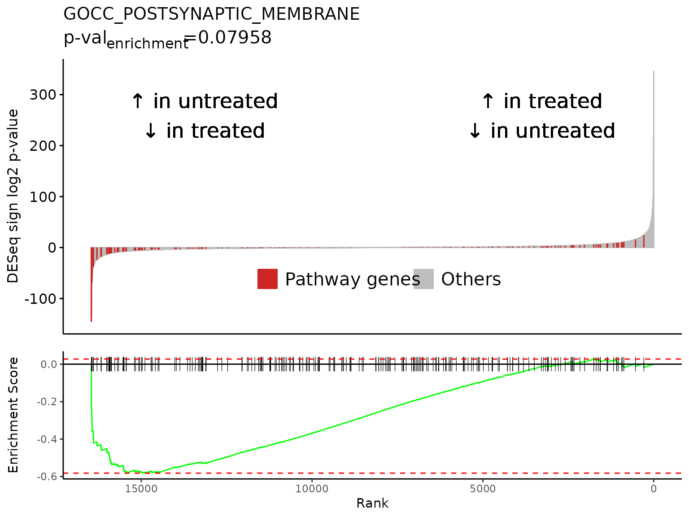
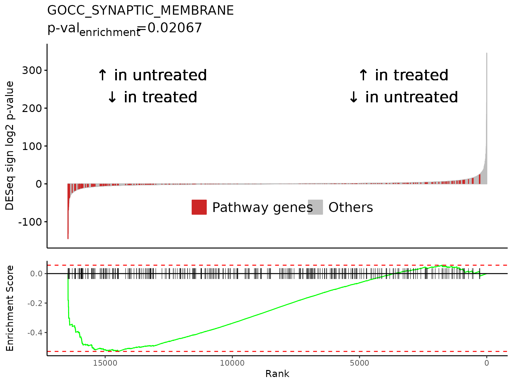
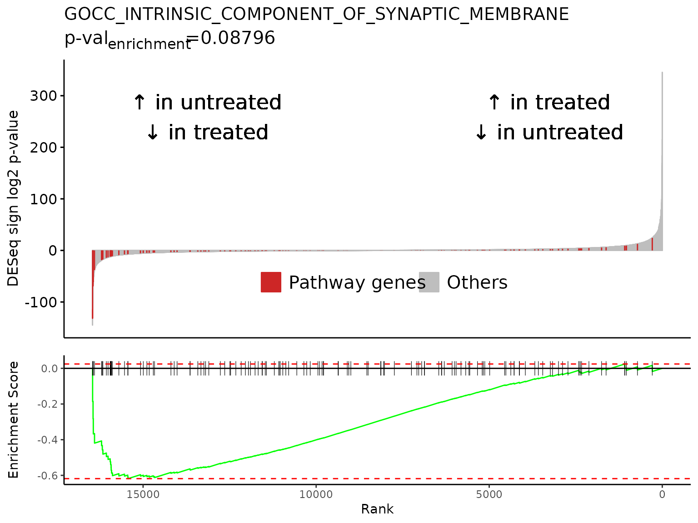

Setup
library(Rubrary)
library(dplyr)
#>
#> Attaching package: 'dplyr'
#> The following objects are masked from 'package:stats':
#>
#> filter, lag
#> The following objects are masked from 'package:base':
#>
#> intersect, setdiff, setequal, union
library(tibble)
# For `airway` install
r = getOption("repos")
r["CRAN"] = "http://cran.us.r-project.org"
options(repos = r)Introduction
The example dataset for this vignette comes from the paper [1] below:
Himes et al. (2014). “RNA-Seq Transcriptome Profiling Identifies CRISPLD2 as a Glucocorticoid Responsive Gene that Modulates Cytokine Function in Airway Smooth Muscle Cells.” PLoS ONE, 9(6), e99625. https://doi.org/10.1371/journal.pone.0099625.
From the abstract:
Using RNA-Seq, a high-throughput sequencing method, we characterized transcriptomic changes in four primary human ASM cell lines that were treated with dexamethasone—a potent synthetic glucocorticoid (1 µM for 18 hours).
The experiment was performed on human airway smooth muscle (ASM) cells. Glucocorticoids are a commonly used drug to treat asthma for its anti-inflammatory effects in lung tissue. The goal of the experiment was to characterize the mechanism of glucocorticoid inflammation suppression through RNAseq. Himes et al. found a number of glucocorticoid-responsive genes such as DUSP1 and CRISPLD2. They also identified enrichment in functional annotation of terms such as “glycoprotein/extracellular matrix”, “vasculature development”, and “circulatory system process”.
In the original paper, the authors used Cuffdiff 2 to find differential gene expression and used the NIH Database for Annotation, Visualization, and Integrated Discovery (DAVID) for gene set enrichment analysis.
Load data
The package airway contains data from the Himes et
al. paper in the form of a RangedSummarizedExperiment object and is
hosted on Bioconductor.
Get airway data from package
if (!requireNamespace("airway", quietly = TRUE)){
BiocManager::install("airway")
}
library(airway)
data(airway)Get counts and sample annotation
The gene expression data is represented in counts. There are 4
samples treated with dexamethasone (anno$dex == "trt") and
4 untreated samples (anno$dex == "untrt").
# Counts
cts <- assay(airway, "counts")
# Annotation
anno <- colData(airway) %>%
as.data.frame()
anno$dex <- relevel(anno$dex, "untrt") # Set untreated as first factor
head(cts)
#> SRR1039508 SRR1039509 SRR1039512 SRR1039513 SRR1039516
#> ENSG00000000003 679 448 873 408 1138
#> ENSG00000000005 0 0 0 0 0
#> ENSG00000000419 467 515 621 365 587
#> ENSG00000000457 260 211 263 164 245
#> ENSG00000000460 60 55 40 35 78
#> ENSG00000000938 0 0 2 0 1
#> SRR1039517 SRR1039520 SRR1039521
#> ENSG00000000003 1047 770 572
#> ENSG00000000005 0 0 0
#> ENSG00000000419 799 417 508
#> ENSG00000000457 331 233 229
#> ENSG00000000460 63 76 60
#> ENSG00000000938 0 0 0
head(anno)
#> SampleName cell dex albut Run avgLength Experiment
#> SRR1039508 GSM1275862 N61311 untrt untrt SRR1039508 126 SRX384345
#> SRR1039509 GSM1275863 N61311 trt untrt SRR1039509 126 SRX384346
#> SRR1039512 GSM1275866 N052611 untrt untrt SRR1039512 126 SRX384349
#> SRR1039513 GSM1275867 N052611 trt untrt SRR1039513 87 SRX384350
#> SRR1039516 GSM1275870 N080611 untrt untrt SRR1039516 120 SRX384353
#> SRR1039517 GSM1275871 N080611 trt untrt SRR1039517 126 SRX384354
#> Sample BioSample
#> SRR1039508 SRS508568 SAMN02422669
#> SRR1039509 SRS508567 SAMN02422675
#> SRR1039512 SRS508571 SAMN02422678
#> SRR1039513 SRS508572 SAMN02422670
#> SRR1039516 SRS508575 SAMN02422682
#> SRR1039517 SRS508576 SAMN02422673
DESeq2 differentially expressed genes
DESeq2 [2] performs
differential gene expression analysis my modeling counts as a negative
binomial distribution.
Create DESeqDataSet object and run DESeq
Rubrary::output_DESeq takes the DESeqResults object,
transforms it to a dataframe, and adds a sign log2 p-value column.
library(DESeq2)
dds <- DESeqDataSetFromMatrix(
countData = cts[,rownames(anno)],
colData = anno,
design = ~ dex)
dds <- DESeq(dds)
#> estimating size factors
#> estimating dispersions
#> gene-wise dispersion estimates
#> mean-dispersion relationship
#> final dispersion estimates
#> fitting model and testing
res <- results(dds, contrast = c("dex", "trt", "untrt"))
deseq_res_df <- Rubrary::output_DESeq(res)Replace Ensembl ID w/ HGNC symbol
airway gene names are given in Ensembl
ID, but HGNC
gene symbols can be easier to interpret in downstream analysis and
more compatible with gene set enrichment analysis (GSEA) tools.
# Gene format is currently in Ensembl ID format
head(deseq_res_df$gene)
#> [1] "ENSG00000152583" "ENSG00000148175" "ENSG00000179094" "ENSG00000134686"
#> [5] "ENSG00000125148" "ENSG00000120129"
library(biomaRt)
#> Warning: replacing previous import 'utils::findMatches' by
#> 'S4Vectors::findMatches' when loading 'AnnotationDbi'
# Load Mart object - database of Homo sapiens genes from Ensembl
mart <- biomaRt::useDataset(
dataset = "hsapiens_gene_ensembl",
mart = biomaRt::useMart("ENSEMBL_MART_ENSEMBL"))
conv <- Rubrary::convert_genes(
genes = deseq_res_df$gene,
from_to = c("ensembl_gene_id", "hgnc_symbol"),
mart = mart, table = T) %>%
filter(hgnc_symbol != "") %>% # Exclude unmatched HGNC symbols
distinct(hgnc_symbol, .keep_all = T)
deseq_res_hgnc <- dplyr::left_join( # Join stats with HGNC symbol table
conv, deseq_res_df, by = join_by(ensembl_gene_id == gene)) %>%
arrange(desc(sign_log_p))
# Genes now have associated HGNC symbols
head(deseq_res_hgnc)
#> ensembl_gene_id hgnc_symbol baseMean log2FoldChange lfcSE stat
#> 1 ENSG00000152583 SPARCL1 997.4398 4.602526 0.21177076 21.73353
#> 2 ENSG00000148175 STOM 11193.7188 1.451466 0.08482489 17.11132
#> 3 ENSG00000179094 PER1 776.5967 3.183858 0.20151544 15.79957
#> 4 ENSG00000134686 PHC2 2737.9820 1.387141 0.09158425 15.14607
#> 5 ENSG00000125148 MT2A 3656.2528 2.203439 0.14740866 14.94782
#> 6 ENSG00000120129 DUSP1 3409.0294 2.948984 0.20161362 14.62691
#> pvalue padj sign_log_p
#> 1 9.889991e-105 1.838055e-100 345.4965
#> 2 1.221959e-65 1.135505e-61 215.6361
#> 3 3.132381e-56 1.940510e-52 184.3807
#> 4 8.043913e-52 3.737403e-48 169.7324
#> 5 1.609198e-50 5.981389e-47 165.4101
#> 6 1.891923e-48 5.860231e-45 158.5327Filter to protein coding genes
For ease of interpretation, the DE genes results can also be filtered
to protein coding genes only. Rubrary::filter_genes() can
filter with the list of protein coding genes retrieved with
Rubrary::get_PC_genes(). Since we already created the
Mart object when converting gene symbols, we can reuse it
to avoid querying the BioMart database again and load protein coding
genes efficiently.
deseq_res_hgnc_PC <- Rubrary::filter_genes(
df = deseq_res_hgnc,
gene_col = "hgnc_symbol",
genes_filt = Rubrary::get_PC_genes(mart)
)Volcano plot
DESeq results can be visualized through volcano plots. Volcano plots show that top and bottom differentially expressed genes when sorted by decreasing signed log p value present as outliers on the top right and top left.
# All DE genes
head(deseq_res_hgnc[order(deseq_res_hgnc$sign_log_p, decreasing = T),])
#> ensembl_gene_id hgnc_symbol baseMean log2FoldChange lfcSE stat
#> 1 ENSG00000152583 SPARCL1 997.4398 4.602526 0.21177076 21.73353
#> 2 ENSG00000148175 STOM 11193.7188 1.451466 0.08482489 17.11132
#> 3 ENSG00000179094 PER1 776.5967 3.183858 0.20151544 15.79957
#> 4 ENSG00000134686 PHC2 2737.9820 1.387141 0.09158425 15.14607
#> 5 ENSG00000125148 MT2A 3656.2528 2.203439 0.14740866 14.94782
#> 6 ENSG00000120129 DUSP1 3409.0294 2.948984 0.20161362 14.62691
#> pvalue padj sign_log_p
#> 1 9.889991e-105 1.838055e-100 345.4965
#> 2 1.221959e-65 1.135505e-61 215.6361
#> 3 3.132381e-56 1.940510e-52 184.3807
#> 4 8.043913e-52 3.737403e-48 169.7324
#> 5 1.609198e-50 5.981389e-47 165.4101
#> 6 1.891923e-48 5.860231e-45 158.5327
tail(deseq_res_hgnc[order(deseq_res_hgnc$sign_log_p, decreasing = T),])
#> ensembl_gene_id hgnc_symbol baseMean log2FoldChange lfcSE
#> 25081 ENSG00000162692 VCAM1 508.1702 -3.609367 0.32654691
#> 25082 ENSG00000108821 COL1A1 100990.6944 -1.299499 0.11528151
#> 25083 ENSG00000144369 FAM171B 1303.2727 -1.350324 0.11607419
#> 25084 ENSG00000116584 ARHGEF2 2250.5969 -1.014517 0.08232161
#> 25085 ENSG00000196517 SLC6A9 229.6407 -2.216934 0.16666134
#> 25086 ENSG00000178695 KCTD12 2649.8501 -2.499912 0.17893290
#> stat pvalue padj sign_log_p
#> 25081 -11.05314 2.116887e-28 1.639264e-25 -91.93204
#> 25082 -11.27239 1.796180e-29 1.589619e-26 -95.49098
#> 25083 -11.63328 2.791614e-31 2.882341e-28 -101.49867
#> 25084 -12.32382 6.742097e-35 8.353458e-32 -113.51429
#> 25085 -13.30203 2.252620e-40 3.488745e-37 -131.70552
#> 25086 -13.97123 2.335645e-44 4.823106e-41 -144.94102
Rubrary::plot_volcano(
df_deg = deseq_res_hgnc,
names = "hgnc_symbol",
x = "log2FoldChange", y = "pvalue",
FCcutoff = 1, pCutoff = 5e-04,
title = "Airway Treated vs. Untreated DE Genes",
xlab_high = "\U2191 in treated,\n\U2193 in untreated",
xlab_low = "\U2191 in untreated,\n\U2193 in treated",
subtitle = "All genes"
)
# Protein coding DE genes
head(deseq_res_hgnc_PC[order(deseq_res_hgnc$sign_log_p, decreasing = T),])
#> ensembl_gene_id hgnc_symbol baseMean log2FoldChange lfcSE stat
#> 1 ENSG00000152583 SPARCL1 997.4398 4.602526 0.21177076 21.73353
#> 2 ENSG00000148175 STOM 11193.7188 1.451466 0.08482489 17.11132
#> 3 ENSG00000179094 PER1 776.5967 3.183858 0.20151544 15.79957
#> 4 ENSG00000134686 PHC2 2737.9820 1.387141 0.09158425 15.14607
#> 5 ENSG00000125148 MT2A 3656.2528 2.203439 0.14740866 14.94782
#> 6 ENSG00000120129 DUSP1 3409.0294 2.948984 0.20161362 14.62691
#> pvalue padj sign_log_p
#> 1 9.889991e-105 1.838055e-100 345.4965
#> 2 1.221959e-65 1.135505e-61 215.6361
#> 3 3.132381e-56 1.940510e-52 184.3807
#> 4 8.043913e-52 3.737403e-48 169.7324
#> 5 1.609198e-50 5.981389e-47 165.4101
#> 6 1.891923e-48 5.860231e-45 158.5327
tail(deseq_res_hgnc_PC[order(deseq_res_hgnc$sign_log_p, decreasing = T),])
#> ensembl_gene_id hgnc_symbol baseMean log2FoldChange lfcSE stat pvalue
#> NA.8620 <NA> <NA> NA NA NA NA NA
#> NA.8621 <NA> <NA> NA NA NA NA NA
#> NA.8622 <NA> <NA> NA NA NA NA NA
#> NA.8623 <NA> <NA> NA NA NA NA NA
#> NA.8624 <NA> <NA> NA NA NA NA NA
#> NA.8625 <NA> <NA> NA NA NA NA NA
#> padj sign_log_p
#> NA.8620 NA NA
#> NA.8621 NA NA
#> NA.8622 NA NA
#> NA.8623 NA NA
#> NA.8624 NA NA
#> NA.8625 NA NA
Rubrary::plot_volcano(
df_deg = deseq_res_hgnc_PC,
names = "hgnc_symbol",
x = "log2FoldChange", y = "pvalue",
FCcutoff = 1, pCutoff = 5e-04,
title = "Airway Treated vs. Untreated DE Genes",
xlab_high = "\U2191 in treated\n\U2193 in untreated",
xlab_low = "\U2191 in untreated\n\U2193 in treated",
subtitle = "Protein coding genes"
)
fgsea gene set enrichment analysis
fgsea [3] is an
implementation of an algorithm for fast gene set enrichment analysis
(GSEA), based on the original GSEA algorithm [4].
Get pathways from msigdbr
Gene set enrichment analysis relies on inputting gene sets / pathways
related to biological function. The Molecular Signatures Database
(MSigDB) [5] was published as a database
of annotated pathways to facilitate GSEA and is accessible through the R
package msigdbr [6].
C2CP: curated gene sets, canonical pathways
-
C5GO: ontology gene sets, Gene Ontology gene sets
BP: GO Biological Process ontology
CC: GO Cellular Component ontology
MF: GO Molecular Function ontology
H: hallmark gene sets [7]
if (!requireNamespace("msigdbr", quietly = TRUE)){
BiocManager::install("msigdbr")
}
msigdbr::msigdbr_collections()
#> # A tibble: 23 × 3
#> gs_cat gs_subcat num_genesets
#> <chr> <chr> <int>
#> 1 C1 "" 299
#> 2 C2 "CGP" 3384
#> 3 C2 "CP" 29
#> 4 C2 "CP:BIOCARTA" 292
#> 5 C2 "CP:KEGG" 186
#> 6 C2 "CP:PID" 196
#> 7 C2 "CP:REACTOME" 1615
#> 8 C2 "CP:WIKIPATHWAYS" 664
#> 9 C3 "MIR:MIRDB" 2377
#> 10 C3 "MIR:MIR_Legacy" 221
#> # ℹ 13 more rows
pthwys <- rbind(
msigdbr::msigdbr(category = "C2", subcategory = "CP"),
msigdbr::msigdbr(category = "C5", subcategory = "GO:BP"),
msigdbr::msigdbr(category = "C5", subcategory = "GO:CC"),
msigdbr::msigdbr(category = "C5", subcategory = "GO:MF"),
msigdbr::msigdbr(category = "H")
) %>%
split(x = .$gene_symbol, f = .$gs_name) # Named list of pathwaysRun fgsea
# `fgsea` requires a named numeric vector as input to the `stats` argument
deseq_stats <- setNames(
deseq_res_hgnc_PC[,"sign_log_p"],
deseq_res_hgnc_PC[,"hgnc_symbol"]
)
gsea_results <- fgsea::fgsea(
pathways = pthwys,
stats = deseq_stats,
eps = 0.0,
minSize = 15,
maxSize = 500) %>%
arrange(desc(NES)) %>%
mutate(sign_log10_p = sign(NES) * -log10(pval)) # Create sign_log10_p column
#> Warning in preparePathwaysAndStats(pathways, stats, minSize, maxSize, gseaParam, : There are ties in the preranked stats (6.92% of the list).
#> The order of those tied genes will be arbitrary, which may produce unexpected results.Visualize GSEA results as a table
See the GSEA User Guide: Interpreting GSEA Results for detailed explanation in interpreting results.
# Get top significant pathways by positive/negative enrichment score (ES)
pos_pws <- gsea_results[ES > 0][head(order(pval), n = 5), pathway]
neg_pws <- gsea_results[ES < 0][head(order(pval), n = 5), pathway]
top_pws <- c(pos_pws, rev(neg_pws))
fgsea::plotGseaTable(
pathways = pthwys[top_pws],
stats = deseq_stats,
fgseaRes = gsea_results,
gseaParam = 0.5
)Pathway enrichment plot
Specific pathways of interest can be plotted in GSEA Java app-like enrichment plots that combine a waterfall and mountain plot.
The top enriched pathway from our GSEA results is “HALLMARK_ADIPOGENESIS”, a collection of 196 genes up-regulated during adipocyte (fat cell) differentiation. This is in line with studies reporting the complex effects of glucocorticoids on adipose tissue biology, including differentiation of adipocyte precursors and adipogenesis [8,9].
The maximum absolute value in the Enrichment Score mountain plot
corresponds to the ES value reported in the GSEA
results.
gsea_results[gsea_results$pathway == "HALLMARK_ADIPOGENESIS",]
#> pathway pval padj log2err ES NES
#> 1: HALLMARK_ADIPOGENESIS 4.505836e-07 0.0007826638 0.6749629 0.6955378 1.919844
#> size leadingEdge sign_log10_p
#> 1: 196 SPARCL1,STOM,GPX3,TST,SLC5A6,SQOR,... 6.346225
Rubrary::plot_GSEA_pathway(
sig = deseq_res_hgnc_PC,
geneset = pthwys[["HALLMARK_ADIPOGENESIS"]],
genecol = "hgnc_symbol",
rankcol = "sign_log_p",
rankcol_name = "DESeq sign log2 p-value",
label = FALSE,
title = "Airway DE Genes: HALLMARK_ADIPOGENESIS",
lab_high = "\U2191 in treated\n\U2193 in untreated",
lab_low = "\U2191 in untreated\n\U2193 in treated"
)
For gene sets of smaller sizes, like 20 gene pathway “GOBP_NEURON_FATE_SPECIFICATION”, labeling each gene may be appropriate.
gsea_results[gsea_results$pathway == "GOBP_NEURON_FATE_SPECIFICATION",]
#> pathway pval padj log2err ES
#> 1: GOBP_NEURON_FATE_SPECIFICATION 3.084947e-05 0.01786184 0.5573322 -0.8621391
#> NES size leadingEdge sign_log10_p
#> 1: -1.888097 20 GLI2,SUFU,GLI3,EYA1,EHMT2 -4.510752
Rubrary::plot_GSEA_pathway(
sig = deseq_res_hgnc_PC,
geneset = pthwys[["GOBP_NEURON_FATE_SPECIFICATION"]],
genecol = "hgnc_symbol",
rankcol = "sign_log_p",
rankcol_name = "DESeq sign log2 p-value",
label = TRUE,
title = "Airway DE Genes: GOBP_NEURON_FATE_SPECIFICATION",
lab_high = "\U2191 in treated\n\U2193 in untreated",
lab_low = "\U2191 in untreated\n\U2193 in treated"
)
#> Warning: Removed 16440 rows containing missing values
#> (`geom_text_repel()`).Multiple gene set enrichment plots can be created in a batch with
Rubrary::plot_GSEA_batch, a wrapper for
Rubrary::plot_GSEA_pathway that works well with
lapply. We can use the neg_pws list of pathway
names to plot gene enrichment plots for the most significant negatively
enriched pathways.
gsea_results[gsea_results$pathway %in% neg_pws,]
#> pathway pval padj
#> 1: GOMF_SIGNALING_RECEPTOR_REGULATOR_ACTIVITY 7.663365e-06 0.0099834492
#> 2: GOCC_SYNAPTIC_MEMBRANE 2.676290e-07 0.0006973074
#> 3: GOCC_POSTSYNAPTIC_MEMBRANE 2.336522e-07 0.0006973074
#> 4: GOCC_INTRINSIC_COMPONENT_OF_SYNAPTIC_MEMBRANE 1.445414e-05 0.0125534240
#> 5: GOCC_INTRINSIC_COMPONENT_OF_POSTSYNAPTIC_MEMBRANE 1.331605e-05 0.0125534240
#> log2err ES NES size
#> 1: 0.5933255 -0.4721901 -1.602508 387
#> 2: 0.6749629 -0.5283197 -1.765797 319
#> 3: 0.6901325 -0.5817831 -1.879653 226
#> 4: 0.5933255 -0.6182693 -1.889896 128
#> 5: 0.5933255 -0.6684340 -1.932328 98
#> leadingEdge sign_log10_p
#> 1: TSLP,CCN3,LIF,CXCL12,FLRT3,GDF15,... -5.115580
#> 2: KCTD12,SLC6A9,SLC6A6,LRRTM2,DNM1,FLRT3,... -6.572467
#> 3: KCTD12,SLC6A9,SLC6A6,LRRTM2,FLRT3,CNIH3,... -6.631430
#> 4: SLC6A9,SLC6A6,LRRTM2,FLRT3,ADCY8,EPHB2,... -4.840008
#> 5: SLC6A9,SLC6A6,LRRTM2,FLRT3,EPHB2,ADRA2A,... -4.875625
lapply(
neg_pws,
FUN = Rubrary::plot_GSEA_batch,
genecol = "hgnc_symbol",
pthwys = pthwys,
sig = deseq_res_hgnc_PC,
rankcol = "sign_log_p",
rankcol_name = "DESeq sign log2 p-value",
hllab = "Pathway genes",
lab_high = "\U2191 in treated\n\U2193 in untreated",
lab_low = "\U2191 in untreated\n\U2193 in treated"
)
#> [[1]]
#>
#> [[2]]
#>
#> [[3]]#>
#> [[4]]#>
#> [[5]]